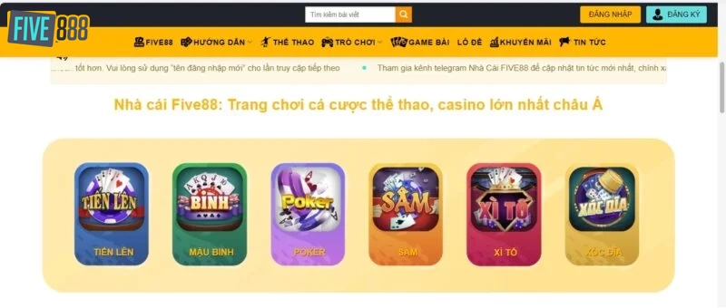
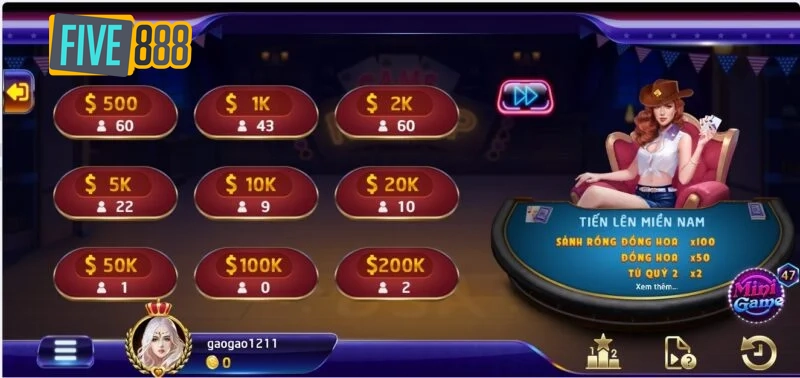
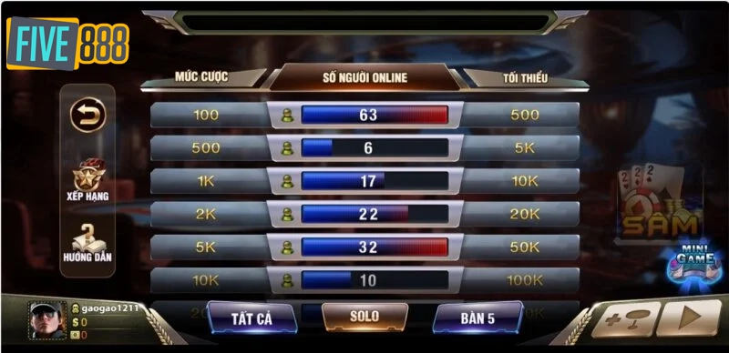
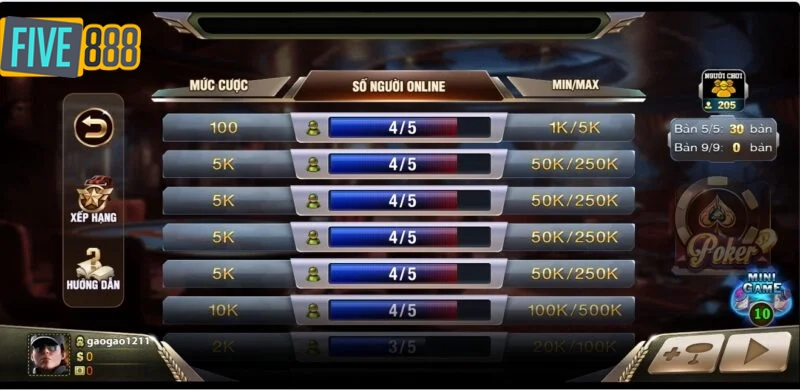
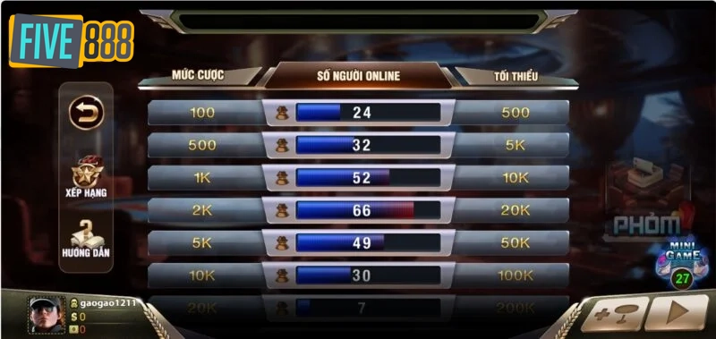

GAME BÀI
Game bài đổi thưởng “siêu đỉnh” tại Five888
POSTED ON THÁNG MƯỜI HAI 19, 2023 BY DIEP_CONT
Five888 là một trong những sân chơi giải trí trực tuyến uy tín hàng đầu Việt Nam. Hàng loạt tựa game bài “cực đỉnh” được phát hành với tỷ lệ trả thưởng hấp dẫn. Hãy cùng theo dõi bài viết dưới đây để hiểu rõ hơn về dòng game này nhé.
Tại sao nên trải nghiệm game bài đổi thưởng tại Five888 ?

Dưới đây là một số lý do khiến cho Five888 trở thành “tâm điểm” của thị trường cá cược Việt Nam, được nhiều anh em săn đón. Cụ thể là:
- Với giao diện được thiết kế khá đơn giản, thân thiện cho người dùng nhưng vẫn mang lại sự hiện đại và đẹp mắt. Hầu hết các danh mục và hình ảnh được bố trí logic, đảm bảo tính khoa học, giúp người chơi dễ dàng tìm thấy các tựa game phù hợp.
- Cung cấp và cập nhật nhiều game bài đổi thưởng mới mẻ, mang đến trải nghiệm thú vị cho người dùng. Điển hình như: Tiến lên, Sâm lốc, Phỏm, Xì tố, Baccarat,…
- Game bài đổi thưởng tại Five888 luôn cho ra tỷ lệ đổi thưởng cao, gia tăng sự hấp dẫn cho người dùng khi tham gia cá cược.
- Khi tham gia game bài đổi thưởng tại Five888, người chơi hoàn toàn yên tâm bởi có thiết lập hệ thống bảo mật, mã hoá đa lớp MD5.
Một số tựa game bài đổi thưởng được yêu thích tại Five888
Five888 liên tục cập nhật game bài đổi thưởng dựa trên nhiều phiên bản mới với tỷ lệ đổi thưởng “siêu hấp dẫn”.
Tiến lên

Trải nghiệm game bài đổi thưởng Tiến lên miền Nam tại Five888
Tại sân chơi Five888, tiến lên là tựa game thu hút rất nhiều cược thủ bởi lối chơi dễ dàng mang tính giải trí cao, dễ dàng tiếp cận đối với những người mới bắt đầu. Trò chơi này thường được chơi bởi một nhóm người có cùng đam mê, tạo nên một liên kết xã hội thu nhỏ.
Có 2 thể loại bạn để bạn lựa chọn, đó là: Bàn 2 và bàn 4. Anh em có thể chọn phòng chơi tùy theo mức tiền dự định đặt cược. Sử dụng bộ bài Tây 52 lá chia cho mỗi người chơi 13 lá, sau đó đánh ngược chiều kim đồng hồ. Ván bài sẽ kết thúc khi trong sòng có 1 người xuống hết bài.
Sâm lốc

Sâm lốc là một trong những thể loại game bài đổi thưởng “siêu hot” tại Five888, có nhịp độ đánh khá nhanh, đồng thời có tính sát phạt cao đã mang lại cho người chơi sự thích thú và hấp dẫn. Tựa game này sở hữu lối chơi vô cùng đơn giản, giao diện đồ họa sắc nét, dễ sử dụng cùng hệ thống bảo mật cao tạo nên sức hút vô cùng mạnh mẽ đối với anh em đam mê cờ bạc.
Tại sân chơi Five888, sâm lốc có 2 thể loại phòng cho người chơi lựa chọn, cụ thể là: Bàn 2 người và bàn 5 người. Mức tiền cược sẽ dao động trong khoảng từ 500 đồng – 500.000 đồng. Trò chơi sử dụng bộ bài Tây 52 lá, chia cho mỗi người chơi trong phòng 10 lá bài. Người đánh đầu mỗi ván sẽ được bốc ngẫu nhiên, đánh ngược chiều kim đồng hồ. Ván bài sẽ kết thúc khi 1 trong 5 người chơi hạ hết bài. Mỗi lá bài sẽ tương ứng với mức tiền đặt cược.
Poker

Hiện nay, poker là tựa game bài đổi thưởng được nhắc đến nhiều nhất trong tất cả các sòng casino. Do đó, đây cũng là trò chơi không thể thiếu trong kho tàng game “khủng” của Five888. Với lối chơi không quá phức tạp, mang lại tính giải trí cao nhưng không kém phần kịch tính nhờ vào các ván bài có sự “sát phạt” nhau.
Đối với trò chơi này thì số lượng người chơi trong một ván là từ 2 – 9 người. Mức tiền cược sẽ tùy thuộc vào quy định của chủ phòng. Khác với các tựa game tiến lên hay sâm lốc, một ván bài Poker tại Five888 sẽ có 4 vòng cược:
- Vòng cược 1: Mỗi người trong sòng sẽ được chia 2 lá bài tẩy. Lúc này, người chơi đã có thể bắt đầu cược.
- Vòng cược 2: Tại vòng này, anh em sẽ được chia thêm 3 lá bài chung.
- Vòng cược 3: Tiếp tục chia thêm 1 lá bài chung.
- Vòng cược 4: Cuối cùng chia thêm 1 lá bài chung.
Khi ván bài kết thúc, nếu ai sở hữu bộ bài mạnh nhất (bao gồm cả bài tẩy và bài chung) thì sẽ được ăn trọn tiền cược hoặc có người tố, tất cả người còn lại phải úp bài.
Phỏm

Phỏm hay còn có tên gọi khác là Tá lả, sử dụng bộ bài Tây 52 lá, chia cho 3 người chơi 9 lá bài, người còn lại là 10 lá và có cơ hội đánh đầu tiên. Để dành được chiến thắng, anh em cần phải tạo nên nhiều “bộ phỏm” nhất trong sòng. Đồng thời tìm cách loại bỏ những quân bài “thừa thải” nhằm giảm thiểu số lượng bài. Một phỏm sẽ gồm có 3 lá trở lên cùng một giá trị số hoặc tứ quý, hoặc một dãy bài có cùng chất. Để chinh phục được tựa game này, đòi hỏi người chơi phải biết quan sát chặt chẽ những người còn lại, tạo ra những nước đi thông minh cho từng lượt.
Những điều cần lưu ý khi chơi game bài đổi thưởng tại Five888
Để đảm bảo an toàn khi chơi game bài đổi thưởng tại Five888, anh em không chỉ đơn thuần tìm hiểu và nghiên cứu mà còn cần phải lưu ý một số vấn đề sau đây:
- Người chơi bắt buộc phải có tài khoản đăng nhập tại Five888 để đổi thưởng. Lưu ý mỗi người chơi chỉ được sử dụng một tài khoản duy nhất để đảm bảo an toàn khi đổi thưởng.
- Cần điền thông tin ngân hàng đầy đủ và chính xác, để khi thực hiện giao dịch nạp rút tiền không bị gián đoạn. Đồng thời, giúp cho người chơi có thể nhận tiền và chuyển đổi xu thưởng thành thẻ cào hoặc tiền mặt an toàn, nhanh chóng.
Trên đây là toàn bộ bài viết chia sẻ về game bài đổi thưởng tại Five888 mà anh em cần tham khảo. Hy vọng với bài viết này sẽ giúp cho bạn tìm được điểm đến lý tưởng để có thêm trải nghiệm tuyệt vời. Cùng nhiều cơ hội đổi thưởng hấp dẫn nhé. Sắp tới đây, chúng tôi sẽ cung cấp thêm nhiều bài viết với chủ đề liên quan. Mời các bạn cùng đón đọc.